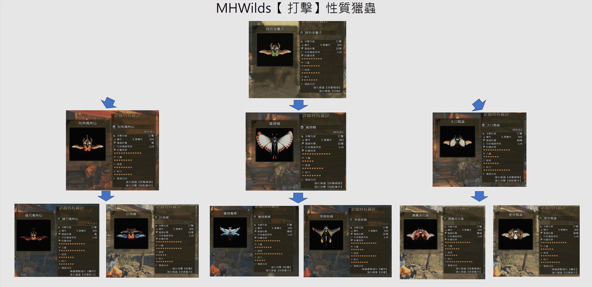
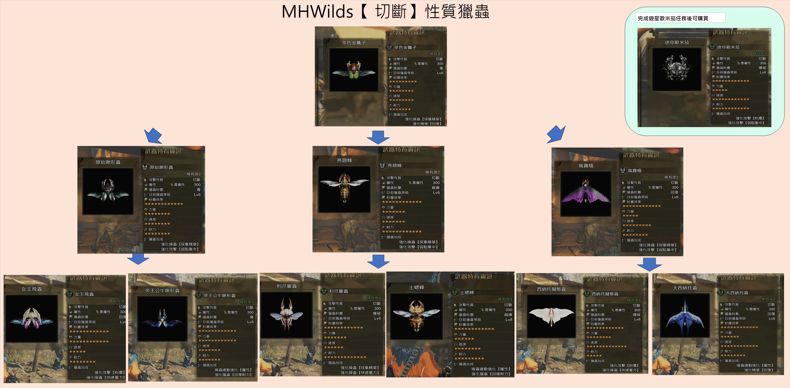

🪲 獵蟲資料及篩選
載入資料中...
lightbulb 獵蟲相關小提示（點擊展開 / 收合） expand_more
獵蟲系統提示
內容以Mhwilds的版本為本，資料人手整合或有錯漏。
1. 攻擊類型區分
- 切斷： 攻擊帶有切斷屬性，可斷尾。
- 打擊： 攻擊帶有氣絕值（KO值），命中魔物頭部可造成暈眩，並消耗魔物耐力。
2. 獵蟲三圍數值
- 力量 (Power)： 影響獵蟲單次直接攻擊與印粉爆發的傷害。
- 速度 (Speed)： 影響獵蟲飛出與返回的速度，速度越高越容易精準採集精華。
- 耐力 (Heal)： 影響獵蟲耐力恢復速度。
- 至於獵蟲版面上顯示的屬性和等級，則跟隨操蟲棍武器的屬性影響。
3. 獵蟲印粉與技能
- 獵蟲在攻擊魔物後會留下獵蟲粉塵，獵人以武器攻擊粉塵即可觸發對應的異常狀態或回復效果。
- 強化操蟲(採集精華)：最多可以一次採3燈。
- 強化操蟲(快速蓄力)：蓄力採燈需時少一點。
- 強化獵蟲(回復耐力)﹕提升回獵蟲耐力速度。
- 操蟲連動強化（屬性）：增加共鬥屬傷。
- 強化攻擊（粉塵）﹕增加異常屬性儲蓄值。
- 強化精華（回復）：綠燈回量上升。能吃技能回量上升加成。。
- 強化攻擊(弱點集中)：增加獵蟲在集中弱點攻擊時的傷害。
4. 進化樹
| 打擊系 | 打擊系 | 打擊系 | 切斷系 | 切斷系 | 切斷系 | |||||
| R1綠色金龜子 | R1綠色金龜子 | R1綠色金龜子 | R1茶色金龜子 | R1茶色金龜子 | R1茶色金龜子 | |||||
| ↓ | ↓ | ↓ | ↓ | ↓ | ↓ | |||||
| R2短角獨角仙 | R2寬翅蛾 | R2大口瓢蟲 | R2原始鍬型蟲 | R2風霧蛾 | R2亮翅蜂 | |||||
| ↓ | ↓ | ↓ | ↓ | ↓ | ↓ | |||||
| R4鏟刃獨角仙 | R4疊翅鳳蝶 | R4圓龜金花蟲 | R4女王飛蟲 | R4西納托擬態蟲 | R4利爪鱟蟲 | |||||
| R4巨角蟬 | R4窄翅長蛾 | R4堅甲瓢蟲 | R4帝王公牛鍬型 | R4大西納托蟲 | R4土蟋蟀 |
lightbulb 進化圖（點擊展開 / 收合） expand_more
內容以Mhwilds的版本為本，資料人手整合或有錯漏。


×